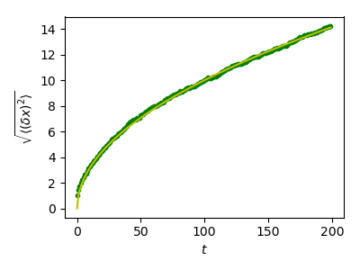

Note
Click here to download the full example code
Random walk exercise¶
Plot distance as a function of time for a random walk together with the theoretical result
import numpy as np
import matplotlib.pyplot as plt
# We create 1000 realizations with 200 steps each
n_stories = 1000
t_max = 200
t = np.arange(t_max)
# Steps can be -1 or 1 (note that randint excludes the upper limit)
steps = 2 * np.random.randint(0, 1 + 1, (n_stories, t_max)) - 1
# The time evolution of the position is obtained by successively
# summing up individual steps. This is done for each of the
# realizations, i.e. along axis 1.
positions = np.cumsum(steps, axis=1)
# Determine the time evolution of the mean square distance.
sq_distance = positions**2
mean_sq_distance = np.mean(sq_distance, axis=0)
# Plot the distance d from the origin as a function of time and
# compare with the theoretically expected result where d(t)
# grows as a square root of time t.
plt.figure(figsize=(4, 3))
plt.plot(t, np.sqrt(mean_sq_distance), 'g.', t, np.sqrt(t), 'y-')
plt.xlabel(r"$t$")
plt.ylabel(r"$\sqrt{\langle (\delta x)^2 \rangle}$")
plt.tight_layout()
plt.show()
Total running time of the script: ( 0 minutes 0.057 seconds)